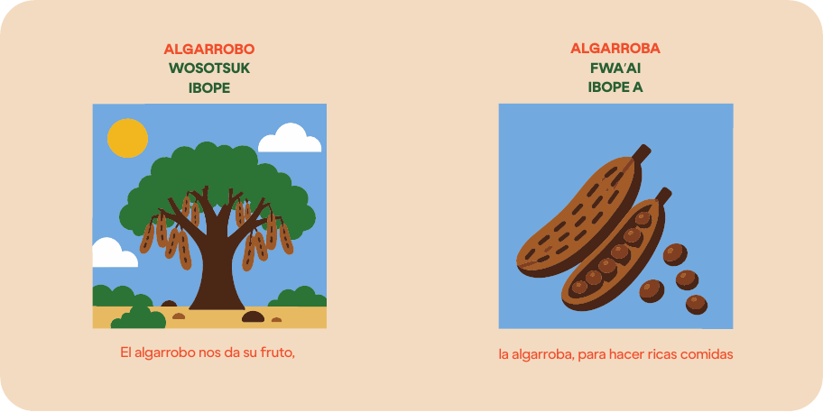

UN PASEO POR NUESTRA TIERRAEl monte tiene
El monte tiene
mucho que contar.
Antes de jugar, recorré las escenas de esta historia y descubrí cómo se relacionan los animales, las plantas y las comunidades que forman parte de este territorio.
01 / 09HISTORIA DEL MONTE

UN JUEGO PARA PONER A PRUEBA TU MEMORIA, DIVERTIRTE Y DESCUBRIR LOS TESOROS DE NUESTRA TIERRA